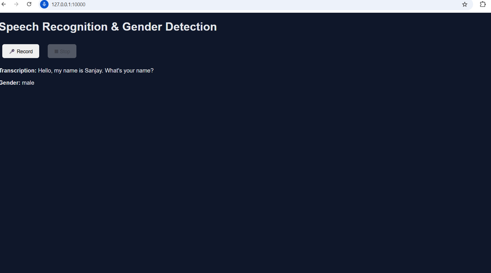

Master’s student in Data Science at Adelaide University.
Focused on building end-to-end machine learning systems with real audio data
and understanding their limitations in production-like settings.
I build end-to-end machine learning systems with a focus on speech processing,
data pipelines, and real-world deployment constraints.
Speech Recognition and Gender Detection System
Problem & Motivation
Most speech-based applications demonstrate transcription using pre-recorded
datasets, without addressing real-time microphone input or downstream audio
analytics. I built an end-to-end system capturing speech from a browser,
transcribing it and extracting speaker-level insights under real-world constraints.
System Design
A browser recorder captures speech and sends it to a Flask backend. Audio
is standardised to WAV, transcribed using Whisper, and MFCC features are
extracted for gender prediction via a trained Random Forest model. Results
return as JSON and are rendered dynamically in the frontend.
Key Challenges
– Browser audio format inconsistency
– Handling noise and accent variation
– Debugging across frontend, backend and model layers
Trade-offs & Learnings
I prioritised robust preprocessing and system clarity, learning how real-world
audio handling impacts model performance more than model architecture.
Result / Output
Real-time speech transcription and gender prediction output.

Python
Flask
Whisper
Audio Processing
View GitHub →
|
Read Technical Blog →
Customer Churn Prediction Web Application
Problem & Motivation
Customer churn is a critical business problem where predictions fail to make
it into real systems. I built a web app where non-technical users can input
customer details and get real-time churn predictions.
System Design
A HTML form collects inputs and sends them to a FastAPI backend, where
features are scaled and encoded, and a Random Forest classifier returns
churn probabilities rendered via Jinja2 templates.
Key Challenges
– Feature name consistency
– Manual preprocessing
– Deployment-time parsing & dependency issues
Trade-offs & Learnings
Explicit preprocessing improved debuggability and reliability; deployment
issues arise more from data mismatches than model choice.
Result / Output
Web-based churn prediction with probability results.
Python
FastAPI
Machine Learning
Model Deployment
View GitHub →
|
Read Technical Blog →